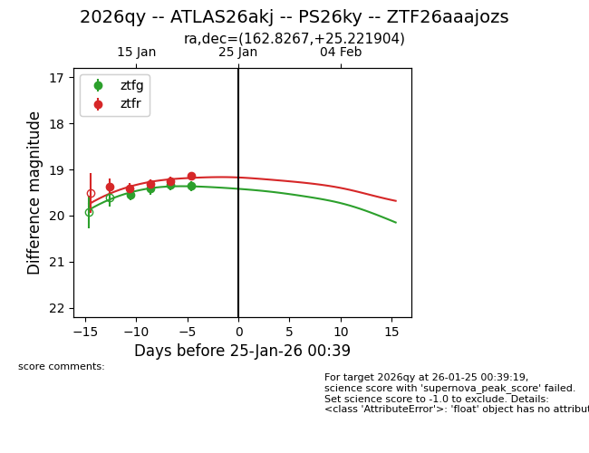
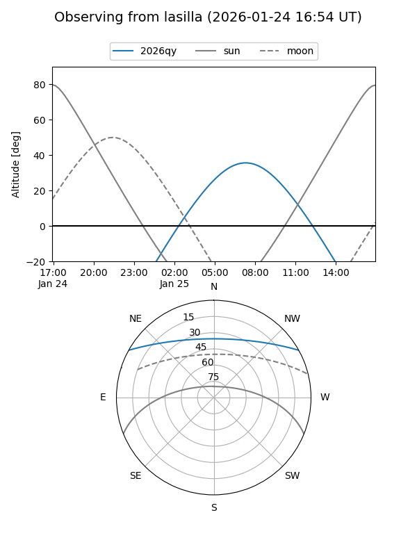
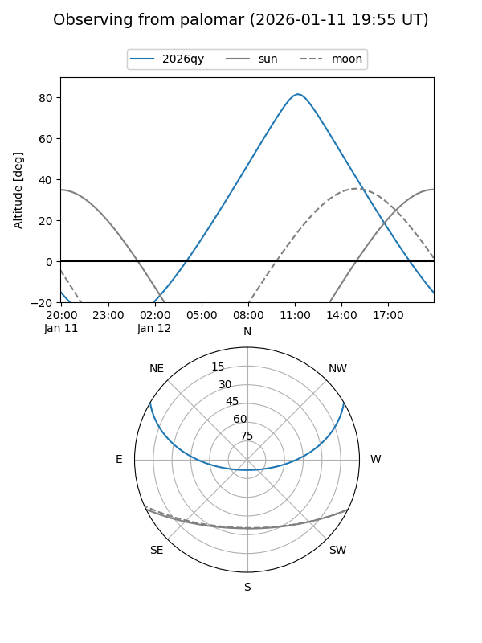
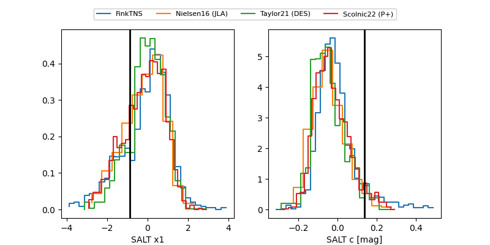

2026qy
Target 2026qy at 2026-01-29 03:01
Aliases and brokers:
FINK: link
Lasair: link
ALeRCE: link
TNS: link
YSE: link
alt names
ZTF26aaajozs (ztf,fink_ztf)
2026qy (tns,yse)
ATLAS26akj (atlas)
PS26ky (panstarrs)
Coordinates:
equatorial (ra, dec) = 162.8267,+25.22190
equatorial (HMS+DMS) = 10:51:18.42,+25:13:18.85
galactic (l, b) = (210.1353,+63.04313)
Flags:
Photometry:
last ztfg=19.36, ztfr=19.17
4 ztfg, 6 ztfr detections
Lightcurve

Visibility


Additional plots
